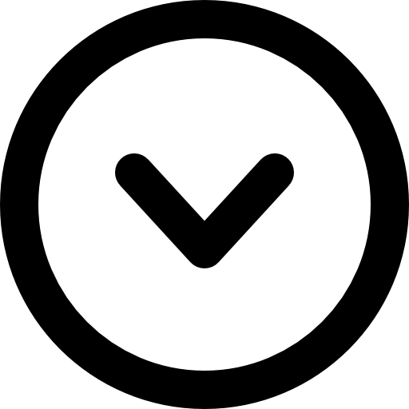
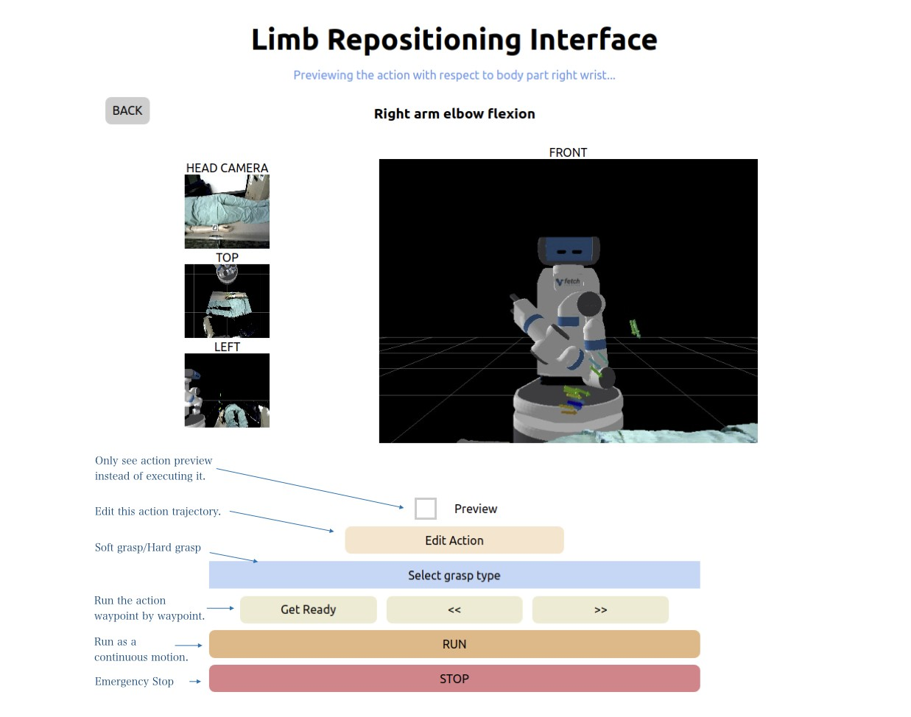
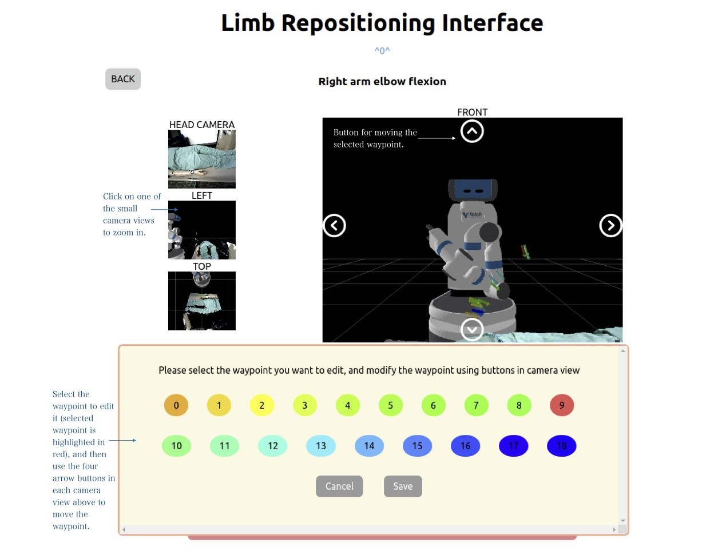
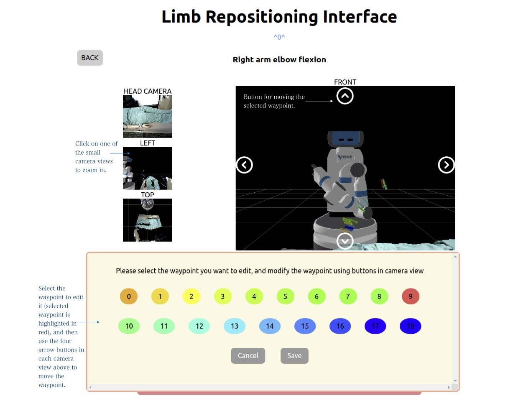

Preview
Would you like to update the octomap as well?
Please select the waypoint you want to edit, and modify the waypoint using buttons in camera view
✦ General Control ✦
Attach/Remove Gripper: close/open the robot's gripper to hold/remove SAKE EZGripper
Update Scene: record the current scene and update body parts known to the robot
Base Control: moves the robot's base to the front/back/left/right
Open Gripper: open SAKE EZGripper
Reset: move the robot's arm to its initial position, open SAKE EZGripper if it's closed
Help: show help information
✦ Program Usage ✦
To do an action, you need to:
- Click on the body part name to see available limb repositioning actions.
- Click on one of the actions for the selected body part to see action details.
- The trajectory of selected action will be displayed in camera views. Click on the camera view to maximize it. Click "Edit" if you want to edit the trajectory, select the waypoint to edit and use arrow buttons in each camera view to edit it.
- Select a grasp type: hard grasp or soft grasp
- You can either do the action at once by clicking "RUN", or do the action step by step by clicking "Get Ready" and then using two arrow buttons "<<" and ">>" to go to previous/next waypoint on the trajectory
- Click "STOP" for emergency stop if necessary>
See these images for details:


